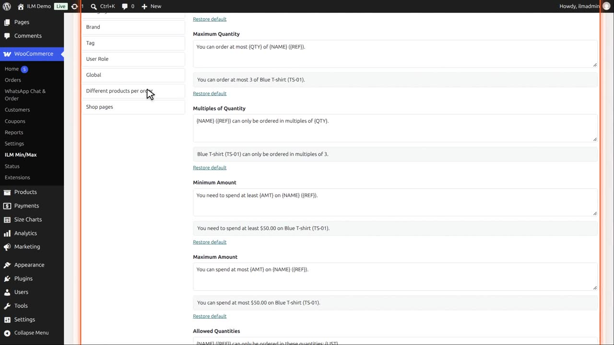
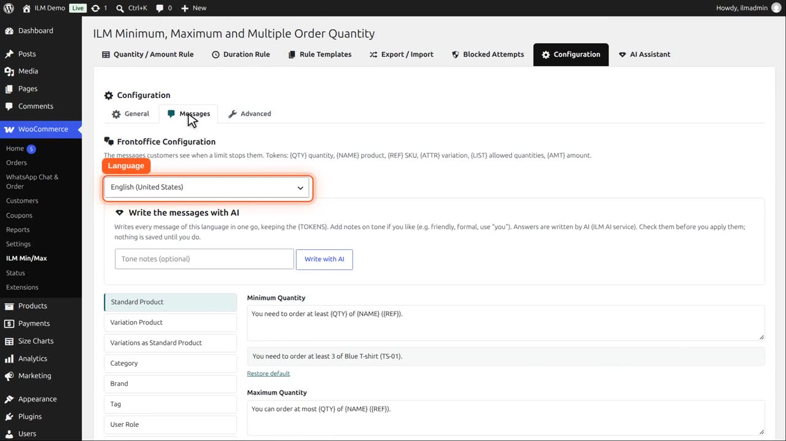
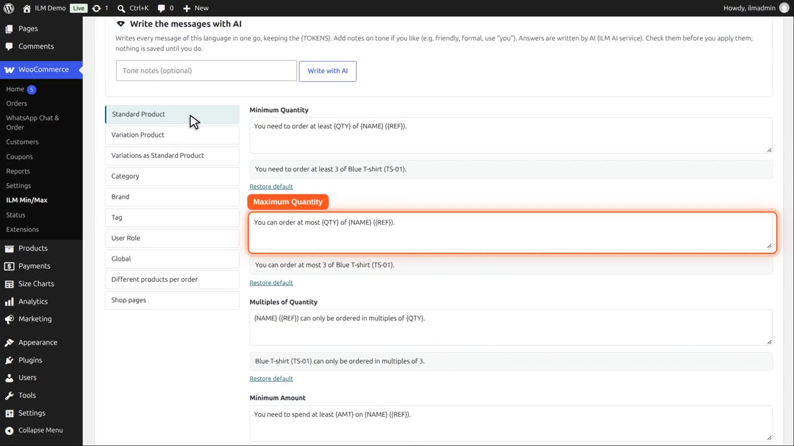
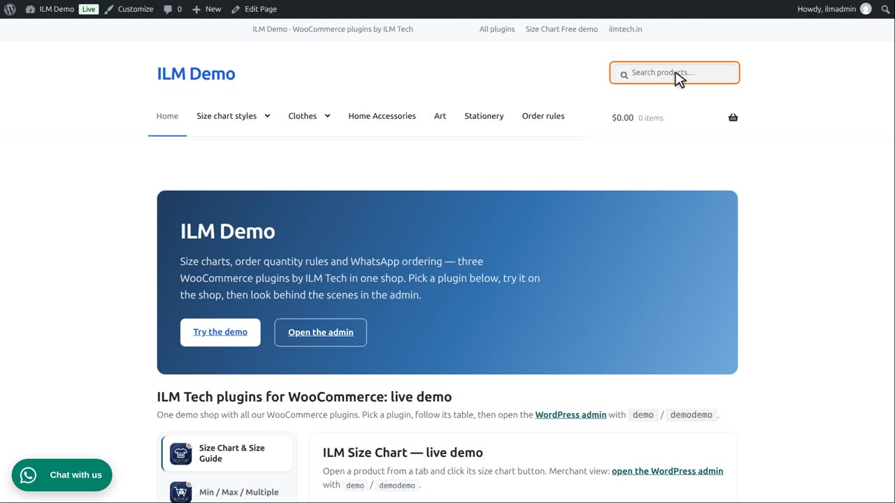
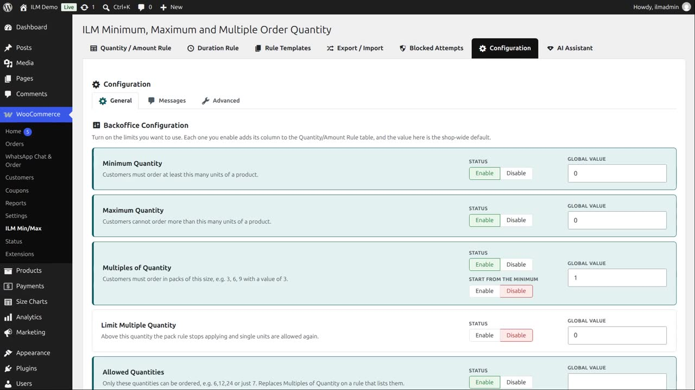
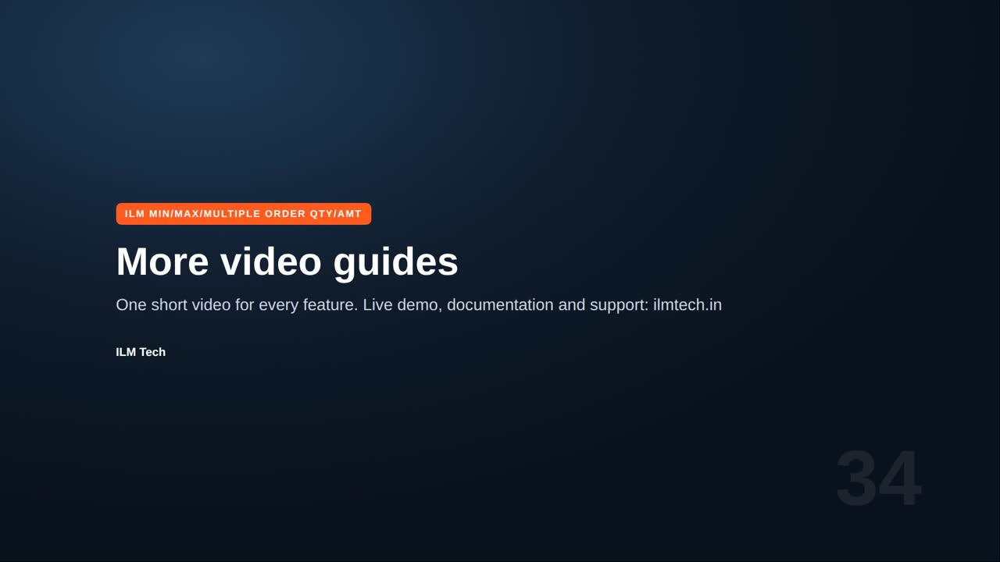

What the shopper is told when a rule stops them. Open Configuration > Messages and pick the level on the left: Standard Product, Variation Product, Category, Brand, Tag, User Role or Global. The free plugin has the product levels; the others come with the Pro add-on.
Placeholders in curly brackets, such as {QTY} and {NAME}, are replaced with the real values, and the preview below each field shows the result straight away. Restore default brings back the wording that comes with the plugin. With WPML or Polylang, pick the language at the top to write the messages of each language.
Open Configuration, then Messages. On the left, pick the level: standard product, variation, category, brand, tag, user role or global.

At the top, pick the language you are editing.

Each message has a field, with the wording that comes with the plugin.

Type your own wording. Placeholders in curly brackets, like QTY and NAME, are replaced with the real values. The preview below shows the result straight away.

In the shop, the customer now sees your wording.

Restore default goes back to the wording that comes with the plugin. Write with AI, above, can write every message of a language for you in one go.
